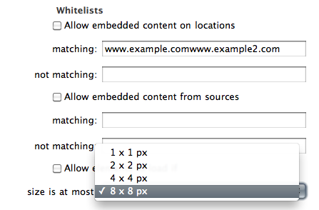
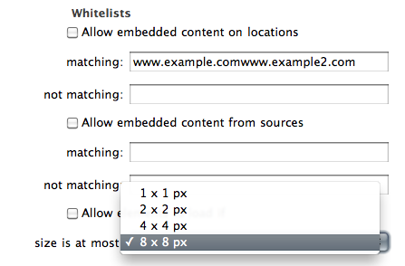

ClickToPlugin 1.4.6 requires Safari 5.0.1 or newer.
This is an extension of my ClickToFlash extension that can deal with all types of embedded content.
Feel free to request features and please report bugs. However, please read the FAQ & Common Issues section carefully before sending me an email.
To unpack the source to the current directory, run xar -f /path/to/ClickToPlugin.safariextz -x. You can also browse the latest source on GitHub.
Both of my extensions owe a lot to several people. As they gain in popularity, I felt I should give more proper credits to them.
I also learned Javascript through those three extensions, so thanks a lot guys!
ClickToPlugin can replace every <embed>, <object>, and <applet> element on a web page by a placeholder element (fig. 1) during page-loading. The user can load the embedded content manually by clicking on this placeholder. The type of content that ClickToPlugin blocks can be specified in the settings. Right-clicking on the placeholder reveals the usual contextual menu with one added item, 'Hide Plugin', which effectively removes the HTML element from the webpage. This is useful for getting rid of overlays that block access to page content. Additional contextual menu items for adding a page or source to the whitelist and unlocking all Flash elements on the page can be enabled in the settings.
Note on Java applets. <embed> and <object> elements fire a 'beforeload' event before their content is fetched by the browser, and they can be replaced by placeholder elements at that time. HTML4's deprecated <applet> elements, however, fire no such event. Although those elements are also replaced by placeholders eventually, ClickToPlugin is unable to prevent the Java plugin from launching when a page contains <applet> elements. A bug report has been filed.
ClickToPlugin is able to replace certain blocked elements by HTML5 <video> tags. The label of the placeholder is then changed accordingly, and an 'HD' prefix is added if ClickToPlugin knows that the video has resolution 720p or 1080p (fig. 2). Clicking on such a placeholder loads Safari's video player. In Snow Leopard this video player features a fullscreen button (fig. 3) and uses hardware acceleration on supported Macs. Double-clicking inside the video player toggles looping.
The original element can still be loaded by right-clicking on the placeholder and choosing 'Load Plugin', or by right-clicking the video and choosing 'Reload in Plugin'.
By default, ClickToPlugin will first try to replace an element by a video playable natively (i.e. without any plugin) by QuickTime. It should succeed with the following elements:
<video> fallback content..mov container. For those videos, Safari's video player will never get past the 'Loading...' stage, but you can select 'Reload in QuickTime' from the contextual menu to access the stream.With the help of third-party QuickTime components, ClickToPlugin can further replace the following elements:
Note. Playback of nonnative codecs in Safari uses much more CPU than native playback. Moreover, if autoplay is enabled, Safari usually starts playing the video too early for smooth playback. For these reasons the feature can be disabled completely. In my casual testing, playback of 480p YouTube videos using Perian uses on average half as much CPU as YouTube's Flash player, while playback of Windows Media videos using Flip4Mac uses on average 60% as much CPU as the Silverlight Video Player.
Hovering the mouse over the bottom of a video placeholder reveals a link to the video (fig. 4 left) that can be used to download the video directly (right-click the link and select 'Download Linked File'). Once the video player has been loaded, a similar link can be accessed by moving the mouse cursor upward from the play/pause button (fig. 4 right).
If the 'Use playlists' setting is enabled, ClickToPlugin can sometimes load whole playlists into the video player. This feature is available for YouTube's on-site playlists (&p= URLs), YouTube's embedded playlists, and JW Player playlists. When a playlist is used, an additional control bar appears above the default one, featuring the title of the video being played, previous/next buttons to navigate the playlist, and an input field that can be used to jump to a video in the playlist (fig. 5). The title of the video also serves as a link to the video that can be used for direct download.

Block all MIME types
To block all embedded content. An exception is made for natively supported MIME types, such as common image types, PDF documents, and SVG documents.
MIME types are strings of the form 'type/subtype[;parameters]' specifying the nature of the embedded content. Common types are:
Here is a useful list of more specific matches:
Allow QuickTime plugin
Instead of manually greenlisting the numerous MIME types handled by the QuickTime web plugin, tick this to allow all QuickTime content.
To see the full list of active plugins and which MIME types they control, go to 'Help' > 'Installed Plug-ins' in Safari's toolbar.
Note. If you only want to block Flash content, I recommend using the more lightweight ClickToFlash extension.
Look for video replacements to
If unticked, ClickToPlugin does not go through the process of looking for video files to replace blocked elements. All the following options are then without effect.
Use playlists
If ticked, ClickToPlugin can load whole playlists from YouTube (on-site and embedded) and the JW Player into the HTML5 video player.
Show preview image on placeholder
If ticked, a preview image of the video is shown on the placeholder instead of the usual gray gradient. Such preview images are not available for all videos.
Load the video player automatically
If ticked, ClickToPlugin automatically replaces blocked elements on locations matching a string in the text field by <video> elements when available, without waiting for the user to click on a placeholder. Strings in the text field must be separated by commas. Simply leave the text field blank to use this behavior on all web pages.
Initial behavior
Choose whether ClickToPlugin creates <video> tags with the 'preload' attribute set to 'none', to 'auto', or with the 'autoplay' attribute. With the 'Do not buffer' option, the video will only start buffering when the 'Play' button is clicked.
Nonnative codecs
Prescribe whether ClickToPlugin considers video files that will use third-party QuickTime components to play. If 'Use only as a last resort' is selected, ClickToPlugin will not load such videos unless there are no natively playable videos available. If 'Use freely' is selected, ClickToPlugin will load the highest-quality video regardless of its format.
Max resolution
An upper bound on the resolutions of the videos loaded by ClickToPlugin. (Because YouTube's videos are of average quality, I find that it is worth choosing the 1080p option even on a 720p screen.)
Sound volume
Sets the initial volume of videos created by ClickToPlugin. Videos on the active page will also respond to this slider while playing.
 

Location matches
Matches Flash content in documents whose URL contains one of these strings.
Source matches
Matches Flash content whose source URL contains one of these strings.
Size matches
Matches the offset size of an element.
Add to Whitelist
A contextual menu item that reads 'Add Source to Whitelist' on placeholder elements and 'Add Location to Whitelist' elsewhere. When selected, a JavaScript pop-up box appears with the URL of the source or location that the user can trim before adding to the respective whitelist.
Load All Plugins
Loads all blocked elements in a document.
View on Site
Appears on embedded YouTube, Vimeo, Dailymotion, and Veoh videos. It loads the video on its respective website in a new tab.
View in QuickTime Player
Opens a video in the QuickTime Player application.
sIFR Text
sIFR is a pre-CSS3 technology for displaying advanced typography on the web. It uses JavaScript to replace some text elements on the page by text-mimicking Flash elements. Choose 'Show text only' to disable this process and display the original HTML text.
Opacity
This slider controls the opacity of the placeholder elements, from invisible to opaque.
Block content manually
If ticked, a pop-up box asks the user for confirmation before blocking any element. This box displays the following information about the element: its type (Flash, Silverlight, etc.), its location, its source, its position within its document, and its size. Further, an option 'Show Element' is added to the contextual menu of placeholder elements; selecting it shows the location and source of the blocked element, as well as the blocked element itself. This is useful for getting information about invisible elements or the location of elements within iframes.
Q. Can I use this extension together with the ClickToFlash plugin?
A. No, unless you want to have to click twice to unlock every element.
Q. Why would I want to allow all elements below a given size?
A. You don't. For security and privacy reasons, automatically allowing elements on random pages is not recommended. Also, elements can be small at first but later grow to become full-fledged ads.
The reason why some people will still use this setting despite my recommendation is the following.
Very small elements, also called 'invisible' elements, are not meant to be seen and thus often have important functions. Some web pages will be crippled when they are blocked, and obviously it is difficult to locate them and load them manually. For example, a common effect of invisible Flash is the message Please install Flash player being displayed instead of expected Flash content: this happens because an invisible Flash element whose function is to replace this message by the Flash object failed to load. The size of these control elements is usually 1x1 px, but some websites are known to use invisible elements up to 8x8 px in size.
That said, you should only use this setting to quickly check if an issue on a trusted page is caused by an invisible element. If it resolves the issue, turn the setting back off and use the 'Block content manually' setting to find out the source of the culprit, and match it with the source whitelist.
Q. Can I use regular expressions in whitelists?
A. Yes! All whitelist-like text fields in the settings support regular expressions. For a string to be considered as a regular expression, it must be enclosed in parentheses. These regular expressions must follow the Javascript syntax (in particular, lookbehinds are not supported). Invalid regular expressions are ignored.
For Google Street View to work, add maps.gstatic.com to the source whitelist.
This happens because the blocked elements are within iframes. Iframes allow a single tab to contain several documents, each with its own location, and the URL displayed in Safari's toolbar is the location of the main document only. The location whitelist considers the location of an element to be that of its document. To find out the real location of an element, tick the 'Block content manually' checkbox in the settings, right-click on the element's placeholder, and select 'Show Element'.
Many issues are caused by blocked invisible elements. Here is a table of known invisible elements which must be allowed to access some functionality on the page:
| Domains | Function of invisible element | Size | Source |
| prostopleer.com & others | Required by SoundManager2, a common sound API | 8x8 | soundmanager2_flash9.swf |
| www.bbc.co.uk | Loads video players on some news pages | 1x1 | emp_proxy.swf |
| www.hulu.com | Loads the main video player | 1x1 | http://www.hulu.com/loadplayer.swf |
Version 1.4.6 (September 16, 2010)
Version 1.4.5 (September 10, 2010)
Version 1.4.4 (September 9, 2010)
Version 1.4.3 (September 6, 2010)
Version 1.4.2 (September 5, 2010)
Version 1.4.1 (September 5, 2010)
Version 1.4 (September 4, 2010)
Version 1.3.3 (August 20, 2010)
Version 1.3.2 (August 16, 2010)
Version 1.3.1 (August 14, 2010)
Version 1.3 (August 13, 2010)
Version 1.2.1 (August 8, 2010)
Version 1.2 (August 8, 2010)
Version 1.1.1 (August 6, 2010)
Version 1.1 (August 6, 2010)
Version 1.0.1 (August 3, 2010)
Version 1.0 (August 3, 2010)